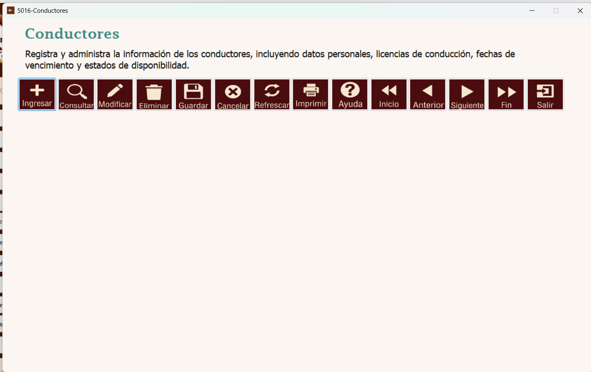
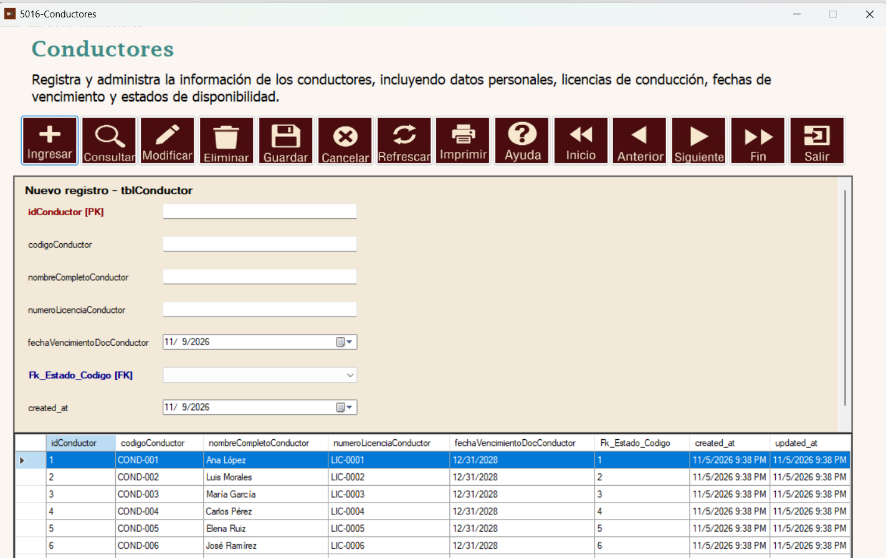
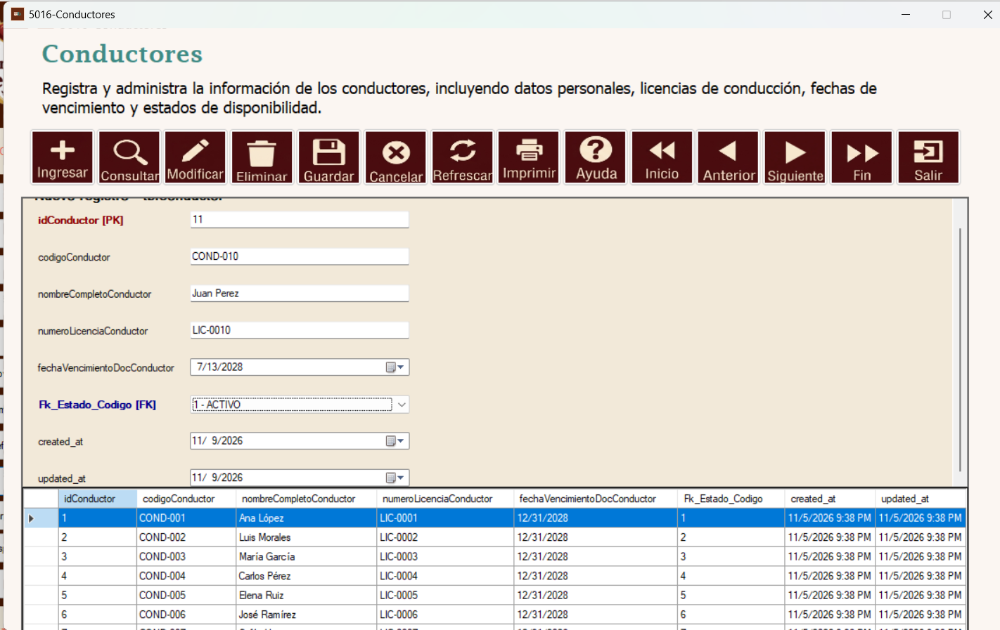
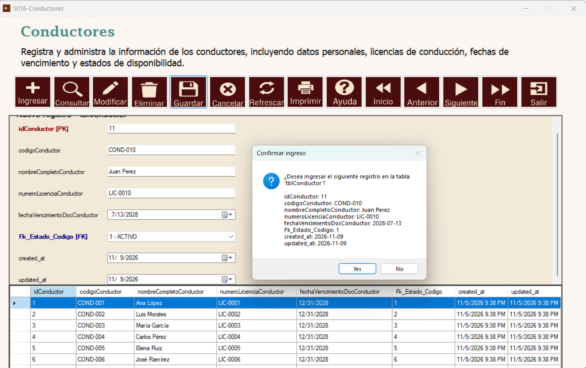
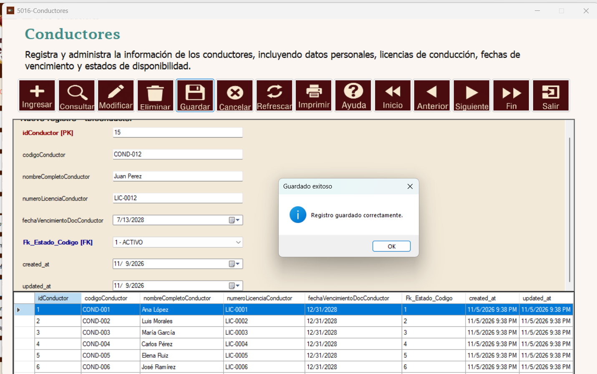
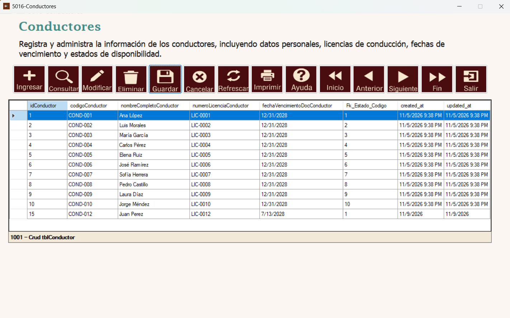
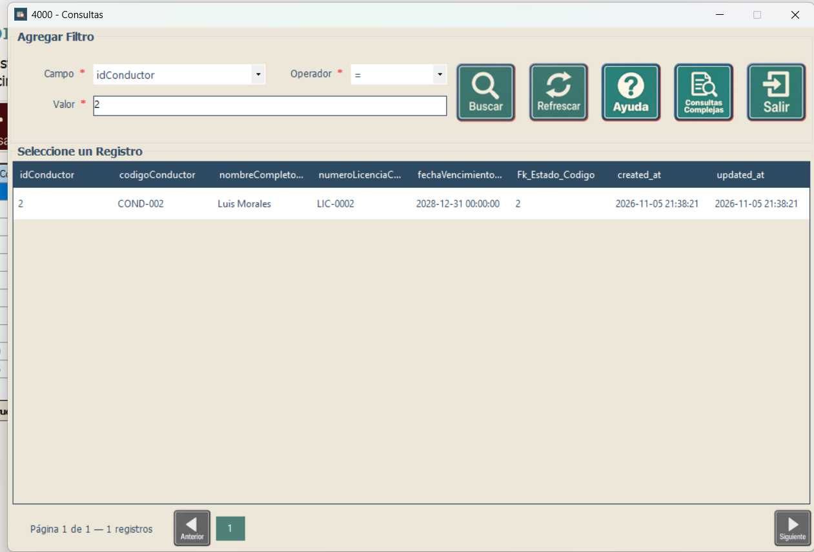
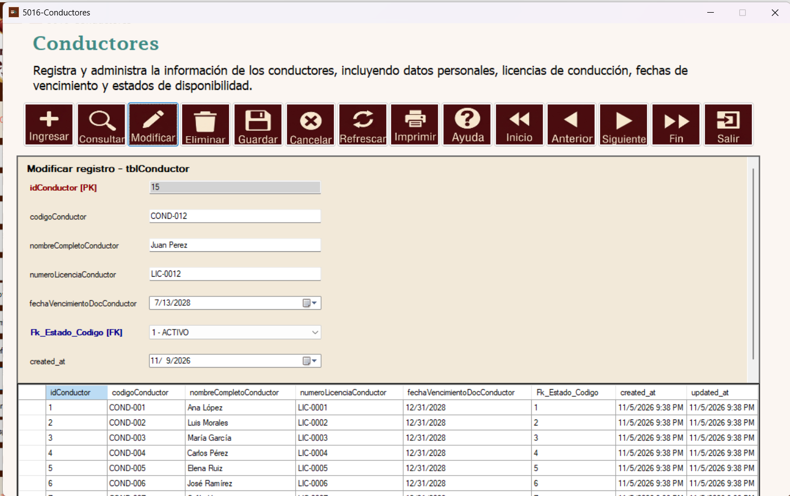
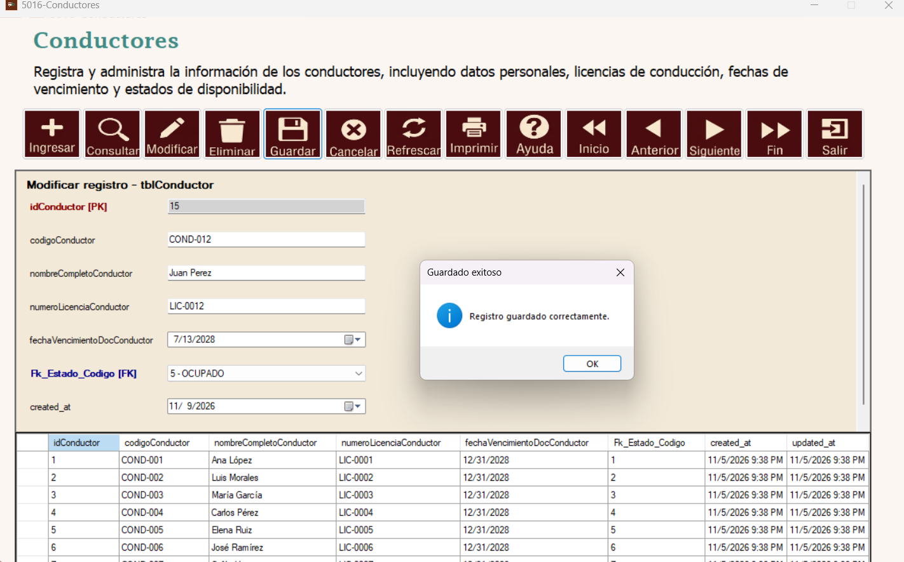
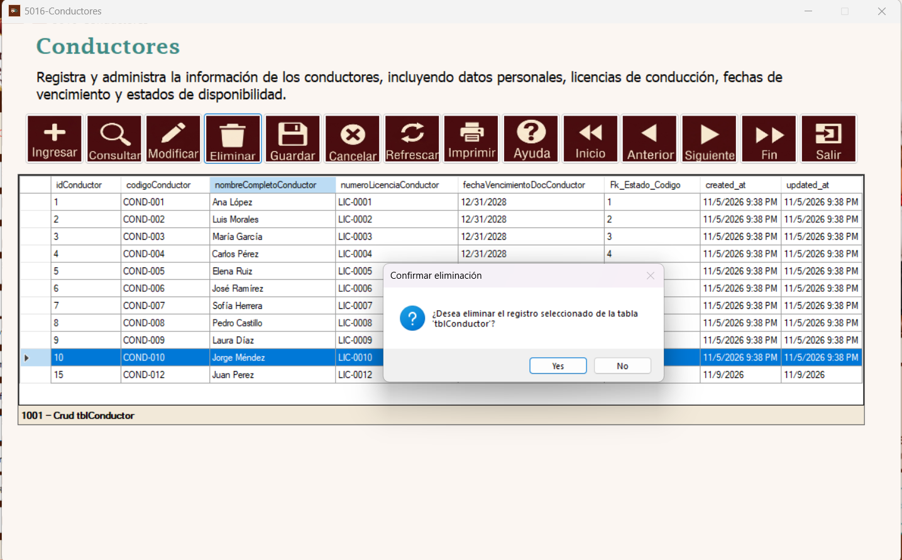

Módulo Logística | Formulario 5016 – Conductores | tblConductor
Este manual explica, con capturas reales del sistema, cómo registrar, consultar, modificar y solicitar la eliminación de conductores.
El mantenimiento 5016 – Conductores administra los datos personales, la licencia de conducción, su fecha de vencimiento y el estado de disponibilidad de los conductores registrados en tblConductor.

Pantalla principal del mantenimiento de Conductores.
Presione Ingresar en la barra de herramientas. Se mostrará el panel Nuevo registro – tblConductor con los campos para completar la información.

Formulario de captura para un conductor nuevo.
Indique codigoConductor, nombreCompletoConductor y numeroLicenciaConductor; seleccione fechaVencimientoDocConductor en el calendario y Fk_Estado_Codigo en la lista de estados. Revise idConductor y las fechas de auditoría conforme a las opciones habilitadas en el formulario.

Ejemplo de conductor con información completa.
Al finalizar, pulse Guardar. El sistema muestra el diálogo Confirmar ingreso con los valores capturados. Seleccione Yes para continuar o No para cancelar.

Ventana de confirmación antes del registro.
Si el ingreso finaliza correctamente aparece el mensaje Registro guardado correctamente. Presione OK para continuar.

Aviso de registro guardado.
Compruebe que el conductor figure en la tabla inferior. En la captura se observa el registro de ejemplo con código COND-012, nombre Juan Perez y licencia LIC-0012.

Listado de conductores actualizado después del ingreso.
Presione Consultar. En la ventana 4000 – Consultas, seleccione Campo, Operador y Valor. Por ejemplo, puede buscar por idConductor = 2 y pulsar Buscar. La cuadrícula mostrará los registros que coincidan con el filtro.
El botón Refrescar actualiza la consulta y Salir cierra esa ventana.

Consulta filtrada por el identificador del conductor.
Seleccione un registro del listado y pulse Modificar. En el panel de edición revise los datos y actualice los campos necesarios, como el estado del conductor. El campo idConductor permanece deshabilitado en la captura, por lo que no debe alterarse. Finalmente presione Guardar.

Panel de modificación del registro seleccionado.
Después de guardar, el sistema muestra Registro guardado correctamente. En la captura el estado del conductor se presenta como 5 – OCUPADO. Pulse OK y verifique los cambios en el listado.

Mensaje de confirmación posterior a la modificación.
Seleccione cuidadosamente el conductor en la tabla y pulse Eliminar. El sistema mostrará el diálogo Confirmar eliminación para tblConductor. Pulse Yes solo si desea continuar; use No para conservar el registro.

Confirmación de eliminación con el conductor seleccionado.
| Campo | Descripción |
|---|---|
idConductor | Identificador principal (PK) del conductor. |
codigoConductor | Código de identificación del conductor; por ejemplo COND-012. |
nombreCompletoConductor | Nombres y apellidos completos del conductor. |
numeroLicenciaConductor | Número de licencia de conducción. |
fechaVencimientoDocConductor | Fecha de vencimiento del documento de conducción. |
Fk_Estado_Codigo | Estado asociado al conductor, seleccionado en la lista desplegable. |
created_at / updated_at | Fechas de creación y actualización del registro. |
| Botón | Función |
|---|---|
| Ingresar | Inicia el alta de un registro. |
| Consultar | Abre la búsqueda con filtros. |
| Modificar | Edita el conductor seleccionado. |
| Eliminar | Solicita eliminar un registro y muestra confirmación. |
| Guardar | Confirma el ingreso o la modificación. |
| Cancelar | Abandona la operación en curso. |
| Refrescar | Actualiza el listado. |
| Imprimir | Accede a la impresión del navegador. |
| Ayuda | Muestra las instrucciones del mantenimiento. |
| Inicio / Anterior / Siguiente / Fin | Recorre los registros disponibles. |
| Salir | Cierra la ventana. |